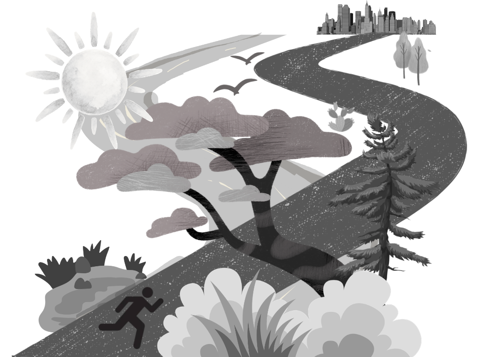

A grassroots organization focused on improving pedestrian connectivity in urban and suburban areas
How do we work towards that mission?
Mapping, doing surveys, geospatial analysis, researching property, identifying desire paths and areas where connectivity is constrained...etc.
What do we do with this info?
Present to city planners, encourage volunteers to make trails or trail improvements (where legally applicable), pressure landowners of "problem plots" to grant easements, spread awareness of walking routes, encourage citizens to speed up pedestrian connectivity projects.
Why is this important?
City governments are busy and this kind of work is invaluable when done by local volunteers because cities often do these studies only on a decadal basis or so. And even when they do, there is this super protracted process in which plans must be agreed on, funding must be secured, and adjacent projects are bundled with walking and cycling infrastructure. We love that cities want to make wheelchair-accessible paths and add benches, bridges, sidewalks, traffic signals, landscaping, or other public amenities alongside trails—however, all this gingerbread slows down the process of the relatively simple and straightforward goal of... making and maintaining paths that facilitate and encourage pedestrian mobility. So, people are forced to walk along busy arterials, make large detours around property and water bodies, crossing roads with high-speed limits, sometimes cutting through private property because there just isn't another workable route on foot.
Furthermore, often a whole fancy project isn't even necessarily what's needed—a simple painted crosswalk, a widened and cleared desire path through some trees, a path along an easement, removing a fence that a landowner has placed on adjacent public property they have no right to enclose...etc. These are simpler tasks. Even if many of these things can't be done easily due to landownership, state laws, or natural barriers, simply documenting areas that may benefit from improvements is the first step of getting these connections prioritized and projects funded.
What do we look for in volunteers?
We are looking for people passionate about increasing mobility and safe travel for walking, running, cycling, really any car-free method of locomotion. People who enjoy walking, exploring, and nature may also find this work rewarding. If you feel you fit these criteria and want to get involved, we'd love to have you participate. We also need people to help with data cleaning tasks for classifying land cover, parcel, and path data if you are interested in helping with that side of things.
What do we offer volunteers?
An unusually flexible opportunity to fully pick your own hours and schedule. Need a few extra hours of community service this month? No problem. Have a lot of time on your hands and want to make it a part-time job? Awesome. I am aware that new requirements have arisen for people receiving benefits like Medicaid and SNAP, as well as community service hours for school/college applications/restitution...etc., and I am more than willing to accommodate requests for official timesheets and records of work completed.
How are we identifying priority areas?
I have been working hard on creating software to identify focus areas for our volunteer surveys. This includes geospatial analysis of many kinds, of which I will detail in my (upcoming) technical appendix. As a volunteer, you can be part of this process too; we need people who have local knowledge to contribute recommendations on where we should focus.
Is there any geographic restriction on where I can volunteer?
No, we will not require you to only survey pre-specified areas. Time is a valuable resource, and we have a general idea of places that have a higher return on investment. Winding suburban subdivisions, neighborhoods next to transportation infrastructure (e.g. existing greenways, bus stops...etc.), and areas nearby centers of commerce or employment for a lot of people are generally good places to start. I am located in North Carolina and currently split my time between Charlotte and Durham, and it will be easiest to be involved within these areas (plus NC has some of the least walkable major cities in the US—so the impact is greater here!), but the concept can scale to any city (if you live elsewhere and are really excited about getting involved, great!). If you want to help out with data, then you can help from anywhere.